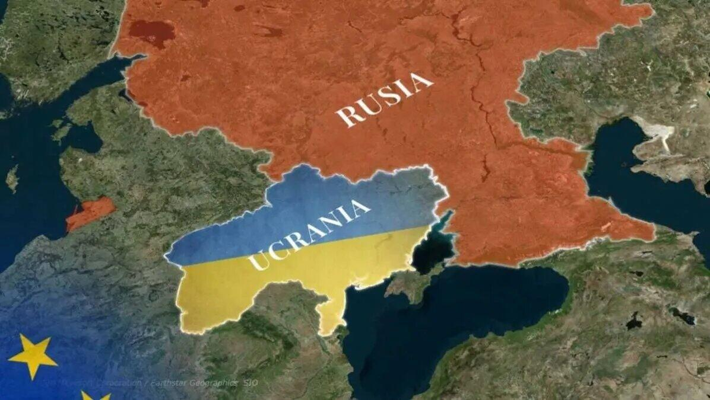

Recordatorio del dia de veteranos y caidos en malvinas
El día 2 de abril se celebra el Día de los Veteranos y Caidos en Malvinas, un día de conmemoración para honrar a los heroes que cayeron en la guerra de las Malvinas.
Aca encontraras informacion sobre las ultimas noticias del pais, el mundo, los deportes y la economia.
Las últimas noticias del país, incluyendo política, economía, sociedad y cultura.
El día 2 de abril se celebra el Día de los Veteranos y Caidos en Malvinas, un día de conmemoración para honrar a los heroes que cayeron en la guerra de las Malvinas.
Luego de semanas bajo vigilancia, la abogada Paez ha regresado al pais luego de lo que fue su situacion ante la justicia luego de los videos en donde se la ve haciendo gestos racistas en Brasil.

El nuevo estreno de Francella "La ultima palabra" ha generado gran interés en el público, con críticos elogiando su actuación y la dirección del film. La nueva película explora temas sociales y políticos relevantes en la actualidad.
Las últimas noticias del mundo, incluyendo política, economía y eventos globales.

El conflicto en Ucrania continúa siendo una preocupación internacional, con tensiones entre Rusia y Ucrania aumentando en las últimas semanas. La comunidad internacional ha llamado a la calma y ha instado a ambas partes a buscar una solución pacífica al conflicto.
Las tensiones en el Medio Oriente continúan, con preocupaciones sobre la estabilidad regional y el impacto en los mercados globales. Los ataques y las respuestas militares han aumentado en la región, involucrando a varias naciones y organizaciones, llevando suma preocupacion por una escalada en la intervencion por parte de grandes potencias.

Los precios de la nafta han aumentado significativamente en las últimas semanas, afectando el costo de vida y la economía global. Las causas principales incluyen tensiones geopolíticas, tales como los conflictos entre occidente y medio oriente, y fluctuaciones en la oferta y demanda del mercado internacional.
Las últimas noticias del mundo deportivo, incluyendo competencias, jugadores y eventos.

Argentina venció a Zambia por 5-0 en un partido amistoso de calentamiento para la copa del mundo 2026, demostrando un rendimiento destacado en el ataque y una defensa solida ante un pobre planteo del equipo africano.
Bolivia no logró clasificarse para la Copa del Mundo 2026, lo que representa una decepción para los aficionados del equipo boliviano. A pesar de los esfuerzos del equipo, no pudieron superar a sus rival Irak en la ultima ronda de repechaje clasificatorio, quedandose a las puertas de participar en el torneo.
Las últimas noticias económicas del país y el mundo, incluyendo mercados, finanzas y política económica.
El dolar cerro con un precio de $1365 para la compra y $1415 para la venta. El dolar blue por otro lado cotiza $1395 para la compra y $1405 para le venta y el dolar MEP $1432,30 y $1436,30 para la compra y venta respectivamente.

La inflación en Argentina alcanzó el 3% en marzo de 2026, según el Instituto Nacional de Estadística y Censos (INDEC). Este aumento se atribuye principalmente a los incrementos en los precios de los alimentos y la energía. El gobierno ha implementado medidas para controlar la inflación, pero se espera que continúe siendo un desafío en los próximos meses.